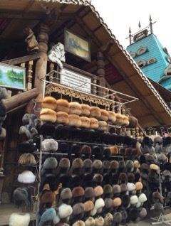
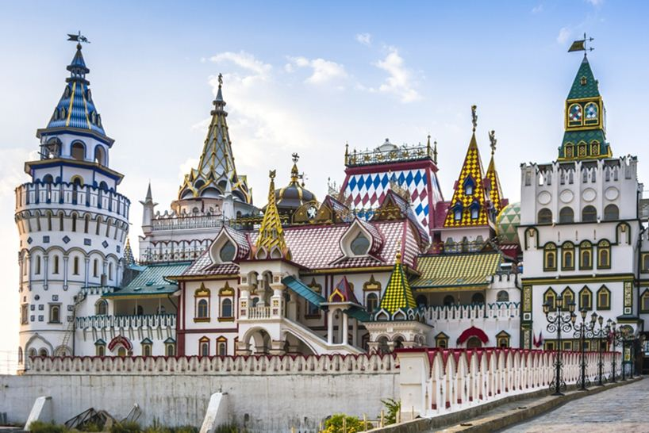
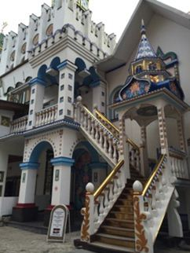
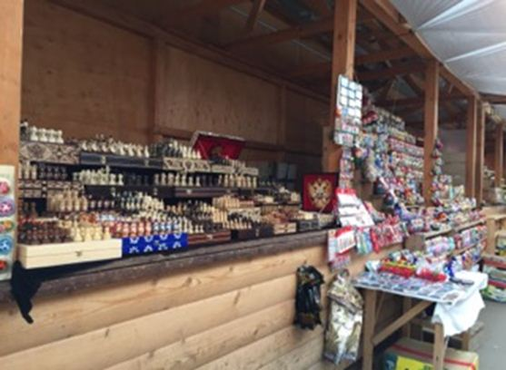
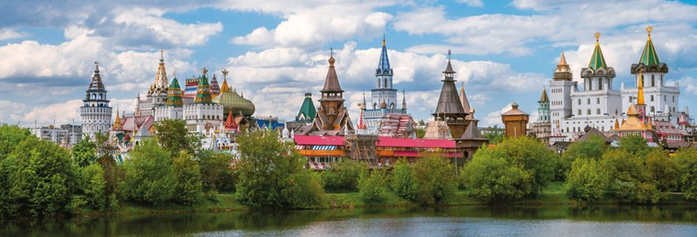
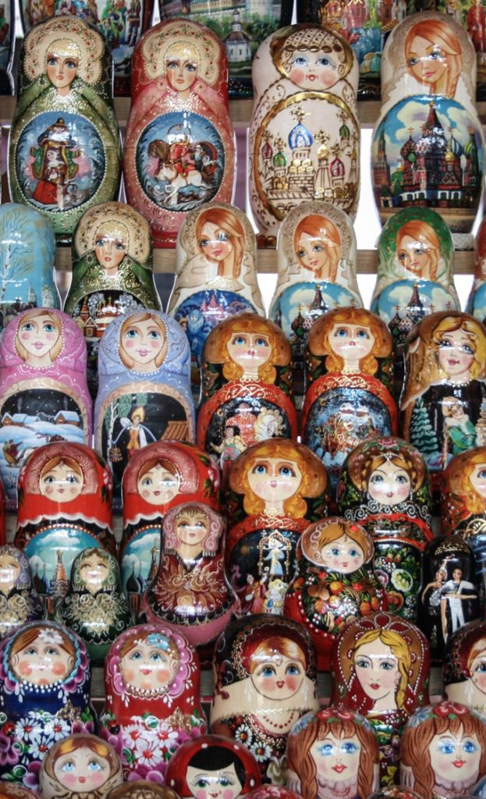
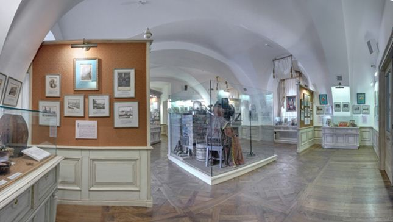
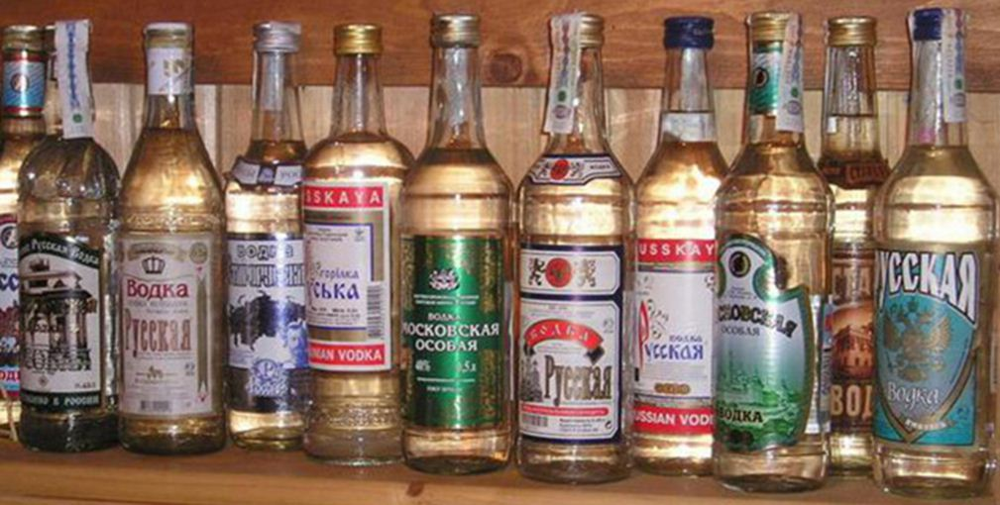

Salut, cher voyageur, chère voyageuse. C’est Tiffany !
Aujourd’hui je suis très heureuse de vous retrouver dans un nouvel article. Je vous propose de voyager dans l’endroit le plus magnifique de Moscou, de la Russie, voire peut être même du monde ! Oui, je sais. Je m’emballe un peu… Serez-vous enchanté comme je le suis ? Suspense !!!
Cet endroit est : le Marché Ismaïlovo et son Kremlin.
Voici les questions auxquelles je vais répondre :
« Le marché Ismaïlovo, qu’est-ce que c’est ? »
« Qu’est-ce qu’il y a à y faire, à y voir ? »
Je vais tout d’abord vous expliquer ce qu’est le Marché Izmaïlovo.
Il faut savoir que cet endroit extraordinaire et magique n’est pas simplement un « marché ». C’est aussi un coin « Vernissage » où vous pouvez dénicher des trésors russes, en tout genre : des affiches, des insignes, des tableaux, des sculptures, des jouets du temps de l’URSS par exemple. Un paradis pour les collectionneurs ou pour les curieux comme vous.
À cela s’est ajouté le merveilleux Kremlin d’Izmaïlovo. Sa construction a été achevée en 2003 ! Vous pouvez admirer des églises, des musées, des ateliers et des restaurants en bois. Oui tout est en bois ! Le résultat est incroyable !
Si vous êtes très curieux, il existe un site internet spécialement dédié au Kremlin d’Izmaïlovo. Les informations détaillées de son histoire et des activités proposées sont dans un français plus ou moins approximatif (ahah!), c’est tout de même une mine d’informations folle.
J’ai pu y lire notamment que sur la place centrale du Kremlin, vous pouvez trouver des bâtiments réservés à la célébration de mariage. Effectivement à ma dernière visite, j’ai vu plusieurs couples de mariés, qui semblaient comblés de bonheur.
Revenons à la partie du marché Izmaïlovo qui me tient à cœur également. C’est un fabuleux marché à souvenir. Les prix à cet endroit peuvent vraiment valoir le coup par rapport aux prix pratiqués dans la Rue Arbat. Mais ! Ce n’est pas une généralité, donc restez vigilant !
En tous les cas, même si vous ne voulez pas encombrer votre valise de souvenirs en tout genre, je vous conseille de venir y flâner. Les échoppes sont très jolies. Et, si vous levez le nez, vous admirez plein de jolis bâtiments et toits de toutes les couleurs.
Ensuite, je vous encourage à monter les escaliers bleus où il y a un énorme bateau grandeur nature. (Je ne sais pas ce qu'il fait là, mais il est vraiment magnifique). En haut de ces escaliers bleus vous découvrirez les échoppes des antiquaires, c'est vraiment splendide ! Comme je vous le disais plus haut dans l’article vous pouvez y dénicher des objets de l'époque soviétique. C'est passionnant !
Soyez bien attentif une fois que vous serez dans le coin des antiquaires. En effet sur la gauche vous verrez une porte puis plus loin un grand porche et ses portes. Foncez ! La première fois, véridique, je n’y suis pas allée. J’ai continué mon chemin et, j’ai raté LE TRÉSOR de cet endroit. Alors, imaginez ma surprise quand je l’ai enfin découvert lors de ma seconde visite : « Чтооооо ? » (le mot quoi en russe qui se dit chto) « J’ai raté ça, j’ai raté le Kremlin d’Izmaïlovo !! » Depuis, croyez-moi, je suis encore plus curieuse du monde qui m’entoure et, surtout je regarde beaucoup plus attentivement les plans à l’entrée hihi !
Concrètement, qu’est-ce qu’il y a à faire, à voir à Izmaïlovo ?
Alléger votre porte-monnaie, vous dégourdir les jambes, en prendre plein les yeux. C’est déjà pas mal, vous êtes d’accord ?
Vous pouvez dénicher quelques musées au niveau de la place centrale du Kremlin. Et, notamment le musée de l’histoire de la Vodka. Je ne l’ai pas visité mais je suis allée lire l’histoire de la vodka sur internet. Je suis curieuse moi aussi. C’est d’ailleurs vraiment passionnant je vous le conseille. Je vais vous en faire un court résumé.
La première fois que le mot vodka a été mentionné en Russie (pays où elle est née apparemment) fut en 1701, sous le règne de Pierre Le Grand. L’État a très vite compris les profits qu’il pourrait en tirer donc la production est devenue immédiatement une affaire nationale. Le seul lieu où elle était vendue à l’époque : les tavernes.
La vodka est devenue mondialement connue en 1950, grâce à la nouvelle mode des cocktails.
Sa vente et sa production sont devenues libres en 1992 sous le gouvernement d’Eltsine.
J’ai quelques chiffres intéressants à vous partager, apparemment : en 1998, 91 % de l’alcool bu en Russie était de la vodka. Whaou !
En janvier 2015 quand je suis arrivée en Russie, le prix de la vodka venait d’être augmenté pour lutter contre l’alcoolisme. En effet, la vodka est l’alcool le moins cher en Russie et aussi le plus vendu donc…
J’ai une autre anecdote sur l’alcool et les russes. Oui je fais du hors-sujet aujourd’hui ahah ! Lors de mes premières sorties moscovites, j’ai été très étonnée d’entendre les russes dire : « Non je ne bois pas, j’ai la voiture ce soir ». Oui, vous avez bien compris, en Russie on conduit avec 0 gramme d’alcool dans le sang, sinon vous pouvez dire adieu au permis de conduire… Et de ce que j’ai remarqué, les russes respectent cette règle.
Fin de la parenthèse !
Autre chose à faire, hormis flâner, faire du shopping, visiter le musée de l’histoire la vodka, prendre des photos et s’émerveiller ?
Vous pouvez manger des brochettes ! En toute saison ! Si vous êtes gourmand ou gourmande, ça devrait vous plaire, non ? Sans parler des restaurants disséminés dans tout Izmaïlovo.
Et surtout ! Je vous conseille de vous promener sur la passerelle du Kremlin ! La passerelle fait pratiquement tout le tour d'Izmaïlovo. Cela vous offre un autre point de vue, en hauteur, du même endroit. C’est très intéressant. Il y a des passerelles, des escaliers partout ! Vous pouvez même vous y perdre ! C’est vraiment une balade inoubliable !!
Hé voilà notre voyage est terminé pour aujourd’hui !
J’espère vous avoir fait voyager de chez vous et que vous avez apprécié ce moment.
En attendant notre prochain rendez-vous, je vous encourage à rester curieux du monde qui vous entoure.